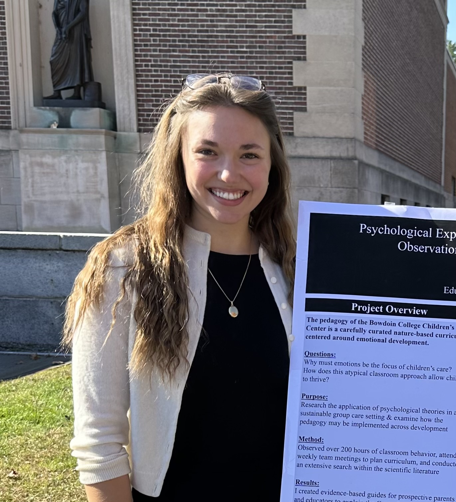

| Week | Date | Weekly Module |
|---|---|---|
| 1 | T: January 21, 2025 | W1: What is cognition? |
| 1 | Th: January 23, 2025 | W1 continued… |
| 1 | Su: January 26, 2025 | Week 1 Quiz due |
| 2 | T: January 28, 2025 | W2: Building blocks |
| 2 | Th: January 30, 2025 | W2 continued… |
| 2 | Su: February 2, 2025 | Week 2 Quiz due |
| 2 | Su: February 2, 2025 | Jennifer’s Office Hours (7-9 pm, Kanbar 200) |
| 3 | M: February 3, 2025 | Project: Questions of Interest due |
| 3 | T: February 4, 2025 | W3: Cognitive limitations |
| 3 | Th: February 6, 2025 | W3 continued… |
| 3 | Su: February 9, 2025 | Week 3 Quiz due |
| 4 | T: February 11, 2025 | W4: Learning and association | No Class! |
| 3 | W: February 12, 2025 | Project: Group Contract due |
| 4 | Th: February 13, 2025 | W4 continued… |
| 4 | Su: February 16, 2025 | Week 4 Quiz due |
| 4 | Su: February 16, 2025 | Jennifer’s Office Hours (7-9 pm, Kanbar 200) |
| 5 | T: February 18, 2025 | W5:Categorization |
| 5 | Th: February 20, 2025 | W5 continued… |
| 5 | Su: February 23, 2025 | Week 5 Quiz due |
| 6 | M: February 24, 2025 | Project: SPARK due |
| 6 | T: February 25, 2025 | W6: Language |
| 6 | Th: February 27, 2025 | W6 continued… |
| 6 | Su:March 2, 2025 | Week 6 Quiz due |
| 7 | T: March 4, 2025 | W7: Loose Ends / Midterm review |
| 7 | W: March 5, 2025 | Jennifer: Midterm Review (4.30-6.30 pm, Kanbar 200) |
| 7 | Th: March 6, 2025 | Midterm Exam |
| 8 | T: March 11, 2025 | Spring Break! |
| 8 | Th: March 13, 2025 | Spring Break! |
| 9 | T: March 18, 2025 | Spring Break! |
| 9 | Th: March 20, 2025 | Spring Break! |
| 10 | T: March 25, 2025 | W10: Problem Solving |
| 10 | Th: March 27, 2025 | W10 continued… |
| 10 | Su: March 30, 2025 | Week 10 Quiz due |
| 11 | T: April 1, 2025 | W11: Decision making |
| 11 | Th: April 3, 2025 | W11 continued… |
| 11 | Su: April 6, 2025 | Week 11 Quiz due |
| 11 | Su: April 6, 2025 | Jennifer’s Office Hours (7-9 pm, Kanbar 200) |
| 12 | M: April 7, 2025 | Project: Argument due |
| 12 | T: April 8, 2025 | W12: Social cognition |
| 12 | Th: April 10, 2025 | W12 continued… |
| 12 | Su: April 13, 2025 | Week 12 Quiz due |
| 13 | T: April 15, 2025 | W13: Culture |
| 13 | Th: April 17, 2025 | W13 continued… |
| 13 | Su: April 20, 2025 | Week 13 Quiz due |
| 14 | T: April 22, 2025 | W14: Intelligence |
| 14 | Th: April 24, 2025 | W14 continued… |
| 14 | Su: April 27, 2025 | Week 14 Quiz due |
| 11 | M: April 26, 2025 | Jennifer’s Office Hours (12-2 pm, Kanbar 200) |
| 15 | T: April 29, 2025 | W15: Project Presentations |
| 15 | Th: May 1, 2025 | Project presentations |
| 16 | T: May 6, 2025 | W16: Last Class / Final Review |
| 17 | T: May 13, 2025 | Final Exam (1.30-3 pm, VAC North) |
Syllabus: Cognition
The Science of How We Learn, Think, and Act
Welcome! This page hosts the syllabus for PSYC 2040.
Basic Course Information
Course number: PSYC 2040
Semester: Spring 2025
When: Tuesdays and Thursdays, 2.50 PM - 4.15 PM
Where: Visual Arts Center (VAC) North
Website: You are here!
Pre-requisites: PSYC 1101 or Placement in above PSYC 1101
Who is your instructor?

Prof. Abhilasha Kumar: Hear my name!
Pronouns: she/her
About me: I am a cognitive scientist who is fascinated by how humans think, learn, and communicate. My work involves conducting psychological experiments to understand different aspects of human behavior such as how we learn the meaning of words, how we search for information, and how we cooperate with one another. When I am not working, I enjoy playing board games, learning new recipes, and playing tennis (badly)!
Email: a.kumar@bowdoin.edu
Office: Kanbar Hall, Room 217
Who is your learning assistant?

Jennifer Ferry
Pronouns: she/her
About me: Hey everyone! I’m a senior from Maine studying Psychology and Philosophy. I’m interested in developmental cognition, philosophy of mind, existentialism, and emotional-based education. Outside of class, I play on the women’s club soccer team and pick-up basketball, read, learn to play the piano, and work at the Children’s Center. I’m excited to be your LA this semester – feel free to reach out if you have any questions about class or want to chat over coffee.
Email: jferry@bowdoin.edu
Student/Office Hours
You are strongly encouraged to drop-in during student/office hours - this is time specifically dedicated to you and any thoughts, questions, or concerns you may wish to share with me. If the designated hours don’t work for you, please email me or the LA to find a different time.
Prof. Kumar’s office hours (Kanbar 217):
- Tuesdays & Thursdays, 4.15 PM -5.30 PM
- Fridays, 11 AM - 12.45 PM (with some exceptions)
Jennifer’s office hours
Please view the schedule for Jennifer’s review sessions/office hours.
What is this course about?
This course explores the scientific study of human cognition — how people acquire, represent, and use knowledge to guide their everyday functioning. Students learn about experimental and computational/mathematical methods of understanding cognition and building real-world tools and applications, and also dive into classic and contemporary research on several aspects of the human mind, such as memory, language, and social cognition through short lectures, podcasts, active discussions, and in-class activities.
Why take this course? a.k.a. learning goals
At the end of this course, I hope that you will:
1. Understand the fundamental questions & prominent methodologies in the study of cognition [Department Goals #1 and #4]
2. Connect theoretical ideas about cognition to specific evidence across different sub-domains and real-world applications [Department Goal #2]
3. Reflect on the sociocultural issues surrounding the study of cognition [Department Goal #3]
Course materials
We are not using a textbook for this course. All of the course materials will be available in a timely fashion on this course website and/or posted on Canvas.
Course structure
There are 16 total weeks in this course. Weekly learning modules will cover different topics in cognitive psychology. Assessment weeks are interspersed across the semester. Students are expected to complete the learning modules and assessments which provide opportunities to earn up to 100 points (+3 extra credit) toward a final grade.
This is an in-person class, and students are expected to attend all class sessions.
Learning module structure
Weekly learning modules include three components to encourage engagement with cognitive science in different ways.
PREP: Most modules either have an assigned reading or surveys/experiments. All material is freely available and posted on Canvas or the course website. Student are expected to complete the assigned material before classes where the material is discussed. This will count towards class participation.
TRY: We will actively learn about different cognitive domains in class via lectures, group work, and activities. This component will involve you actively participating in class.
APPLY: At the end of each week, you will also have a quiz and/or project milestones due. These assignments will help you build on the skills you learn in class, retain information, and apply them to actual tasks and problems you may encounter in psychological research.
Course Schedule
Grading
The grading scale for this class is as follows:
| Letter grade | Points |
|---|---|
| A | 95 - 100+ |
| A- | 90 - 94.99 |
| B+ | 87 - 89.99 |
| B | 83 - 86.99 |
| B- | 80 - 82.99 |
| C+ | 77 - 79.99 |
| C | 73 - 77.99 |
| C- | 70 - 72.99 |
| D | 60 - 69.99 |
| F | fewer than 60% |
Grades will be determined based on the following rubric, which is based on emphasizing our three learning goals (Understand, Connect, and Reflect)
There are multiple ways for students to engage with class and course materials and achieve their desired grade. Students are encouraged to choose the assignments that work best for them. Course assessments that occur throughout the semester are designed to help students set and achieve their own goals for engaging in course content.
Points
| Component | Total | Learning goal | |
|---|---|---|---|
| Weekly quizzes | 25 | Understand, Connect, Reflect | |
| Midterm exam | 20 | Understand, Connect | |
| Final exam | 30 | Understand, Connect | |
| Project work | 15 | Connect, Reflect | |
| Class participation | 10 | Connect, Reflect | |
| Extra credit | 5 | Reflect | |
| Total | 105 |
Weekly quizzes
Each week, you will complete a quiz that will cover the content covered in class. Quizzes will be posted on Canvas and will contain 5-10 multiple-choice and/or true/false questions. You will be allowed two attempts on each quiz and your average score will be recorded. Therefore, you are strongly encouraged to attempt the quiz after carefully reviewing the material.
Please note that all assignments must be submitted before the due date each week (details on Canvas) to count towards the final grade - late submissions will NOT be accepted (unless you are using a flex day, see late work policy).
Each quiz will be worth 5 points on Canvas but scores will be ultimately scaled to total to 25% of your final score in the course.
Assessments
There are two assessments throughout the semester: the midterm (March 6) and the final (during finals week). The purpose of these assessments is to provide you with feedback on your general engagement and retention of information during the course.
Please note that both assessments will be cumulative, i.e., these assessments will be based on the course content covered up until the previous class and will involve multiple-choice, true/false and/or short-answer questions.
Assessments will be conducted in-person.
Project work
The course focuses on understanding empirical research in cognitive science. To help you improve your critical analysis skills, and foster increased intellectual engagement with topics in cognitive science, you will have the opportunity to create a group project that discusses the real-life implications of any topic we cover in class. As a group, you will review some empirical articles on a topic of your choosing, prepare an argument, and present your findings to the class via a project presentation.
You are encouraged to reach out to me or the LA to chat about potential options you are considering for your project during office hours.
Overall, your project will be worth 15% of your grade and will be spread across a few formative milestones. The breakdown of how the milestones contribute to your final project grade is below:
| Milestone | Points |
|---|---|
| Questions of interest | 2 |
| SPARK for review article | 3 |
| Empirical article list + summary | 5 |
| Final presentation | 5 |
| Total | 15 |
Milestone 1: Questions of Interest (2 points)
This assessment will happen relatively early in the semester to gauge which topic(s) you may be interested in exploring through the project. Your questions must be relevant to cognition. We will use this assessment to form interest-based groups for the rest of the semester.
Milestone 2: SPARK for review article or podcast (3 points)
This assessment will help you organize your literature review and structure your analysis and/or writing/designing. With your group, you will find a review article or podcast relevant to your project and submit a SPARK summary of the article or podcast. Review articles and podcasts typically summarize the existing literature on a particular topic. This will help you understand the topic you are interested in detail, and enable you to ultimately connect ideas across readings.
Picking a review article: You must find and read a broad review article from one of the journals listed on the course website and then submit a SPARK summary for the same.
Picking a podcast: You must find and listen to a podcast from one of the following sources and then submit a SPARK summary for the same:
Milestone 3: Argument (5 points)
In this milestone, you will find at least 2 empirical articles on your chosen topic (each representing a central argument, think pros and cons). Empirical articles typically describe an experiment or a collection of experiments that attempt to answer a research question. You have wide latitude in selecting the articles you choose to summarize, as long as they are published in an appropriate journal (peer-reviewed, research reports, and theoretical reports) and not in a popular magazine or on the internet. You can locate your article through a Google Scholar, PsycInfo, or PsycArticles search. The course website has a list of good cognitive science journals you can refer to for this assignment. You might want to use your podcast or review article as a starting point to search for these articles.
You might want to try different keywords and look for highly cited articles and recent articles about the topic and read the abstracts. Finally, having perused about ~5-10 articles, you might want to select ones that you find most interesting and informative. After finding these articles, you should compile a list of references as well as collaboratively write up an argument that discusses both sides of the argument, using your sources (the review article/podcast + the empirical articles + any other sources you may want to add). You should ultimately work towards a logical argument based on the evidence you have accumulated.
Milestone 4: Final presentation (5 points)
For this milestone, you will present your project work at the end of the semester.
Class participation
There are several ways for you to actively engage with the course. You are strongly encouraged to contribute to class discussions, talk with your peers, ask and answer questions, and push yourself. Beyond in-class engagement (which could earn you extra credit!), here are other ways in which your class participation will be assessed:
- Completing activities (5 points): To encourage you to critically engage with the class content, there will be class activities that you may be asked to complete before you come to class. These class activities are intended to spark curiosity for the content we’ll cover in the upcoming class and also give you a feel for the experimental nature of cognitive science. You will get full credit if you participate in at least 90% of the class participation activities and exercises. Beyond that, you will be assigned partial credit based on the number of activities/exercises you miss, i.e., 1 point will be deducted for each 10% drop in participation (e.g., if you participate in 80% of the activities, you will earn 4 points out of 5, if you attend 70% of the classes, you will earn 3 points out of 5, etc.).
- Completing practice exam(s) (5 points): Before each exam, a practice exam will be made available to you to help with your preparation. Submitting these practice exams and getting at least 50% on them will count towards class participation. Completing each practice exam is worth 2.5 points.
Extra credit
There will be some opportunities to earn extra credit during the semester. These opportunities are described below:
Complete class surveys (2 points) : There will be 3 surveys during the semester to gather your reflections and suggestions to improve the course. You will be able to earn 1 point for completing the first survey, and 0.5 for the other two surveys. With the exception of the pre-class survey, the two other surveys will be anonymous.
Win Cognitive Curator (1-2 points): To incentivize timely preparation and encourage you to master the class content, you will have the opportunity to submit multiple-choice and/or true/false questions based on the course content covered each week. Submitting questions for 8 of the 11 content weeks will earn you this extra credit point. Additionally, if your question is selected to be on any of the exams, you will earn an additional extra credit point.
Win Class Catalyst (1 point): Throughout the semester, I will also be observing how you engage with me, the LA, and your peers in and outside of class. Two students who really add to the class dynamic will earn 1 extra credit point each.
Win Memer of the Semester (1 point) : Each week, you will have the opportunity to submit a meme via Canvas, that reflects your experience with the course content of that week. Memes should be original, i.e., they should be course-specific and something you have created yourself and not simply found on the internet, although you are allowed to use common images/tropes from popular memes as a starting point. All memes will be gathered and sent to the class anonymously at the end of the semester for a survey, and the student(s) with the average highest score and the best scoring meme will both receive 1 additional point. Note: A student can only receive a maximum of 1 point through this mechanism, even if the same student has the highest average score in the context and the best scoring meme.
Course Policies
Academic honesty and plagiarism
We, as a class, will abide by the Bowdoin College Academic Honor Code. While you are encouraged to discuss ideas and thoughts with your classmates, plagiarism in any form will be subject to grade reductions and disciplinary action. Specifically, you are permitted to make use of online resources and/or search platforms. However, directly copying or adapting written material and/or your classmates’ answers or ideas will be considered plagiarism. This policy applies to both individual and group assignments.
Please refer to this page for a list of resources related to plagiarism and other academic integrity issues. Here is another helpful infographic about plagiarism that you are encouraged to go over.
Use of generative artificial intelligence tools
Acknowledgement: This policy about generative AI was generated using the Generative AI Syllabus Statement Tool provided by Seaver College
Generative artificial intelligence tools — software that creates new text, images, computer code, audio, video, and other content—have become widely available. Well-known examples include ChatGPT/Bard for text and DALL-E for images. This policy governs all such tools, including those released during our semester together.
You may use generative AI tools for work in this course to help with idea generation, literature review, drafting, and other such academic work. If you do use generative AI tools on assignments in this class, you must properly document and credit the tools themselves.
Cite the tool you used, following the pattern for computer software provided by the American Psychological Association (APA) guide. If you choose to use generative AI tools, please remember that they are typically trained on limited datasets that may be out of date. Additionally, generative AI datasets are trained on pre-existing material, including copyrighted material; therefore, relying on a generative AI tool may result in plagiarism or copyright violations. Finally, keep in mind that the goal of generative AI tools is to produce content that seems to have been produced by a human, not to produce accurate or reliable content; therefore, relying on a generative AI tool may result in your submission of inaccurate content. It is your responsibility as a scholar — NOT the tool’s — to assure the quality, integrity, and accuracy of work you submit in any college course. Although you have wide latitude to determine how you use generative AI tools in this course, you must be wary of unintentional plagiarism or fabrication of data. Please act with integrity, for the sake of both your personal character and your academic record.
Electronic devices
Most of our class time will be spent in short lectures and in-person/online activities. Therefore, you are expected to bring your Bowdoin Macbook to class. Please make sure that your device is charged when you arrive to class. In order to minimize distractions, please close or exit out of all other programs except those needed during class, and put your Mac/iPad on “work” mode. All class time should be devoted to working on in-class activities and group work.
How many classes can you miss?
It not only benefits your learning, but benefits all of our learning to be present together in the same space. Class time is designed to take advantage of our presence together. To that end, your attendance will count towards your class participation as we will do several in-class activities.
Of course, emergencies (illness or family emergencies) can and do occur. Note: If you are sick, please stay home. However, I would greatly appreciate that you email me if you will be missing class. If you miss more than 2 classes and I haven’t heard from you, I will be in touch to check in on you. Hopefully you will have connections to other students in the class and can find out what you missed from a classmate. I will also try my best to upload slides and other course materials on the website and/or on Canvas.
Late Work Policy
Sometimes, life doesn’t go as planned and you have way too much going on to turn things in on time. That is OKAY! This course has the following policies for late work:
- Each student has 3 “flex” days that they can use at their discretion throughout the semester for specific assignments (see points 2 and 3). You can use all 3 days at once for a single assignment and turn in one assignment 3 days late (with no questions asked), OR you can spread the love across different assignments.
- Flex days may ONLY be used for weekly assignments (quizzes and/or project work).
- If an assignment is a GROUP assignment (as will be the case for project work), EACH member of the group will need to count off their individual flex day for the flex day to count.
- Flex days may NOT be used for in-class assessments or activities.
- If you need to turn in work late and do not have any flex days left, I will consider extensions based on legitimate reasons, which ONLY include verified illnesses and/or family emergencies. In these cases, you are encouraged to reach out to me at least 24 hours in advance of the due date.
- Using ONE flex day means you get a 24-hour extension. Please note that this is a strict extension.
- Work that is handed in late beyond the flex days or without an approved extension will automatically incur a 10% penalty per day, with a lowest possible score of 50% of the original points.
- To request a flex day, you can leave a comment on your submitted assignment on Canvas. If your work is late and no comment is made on Canvas, the late penalty will be automatically applied.
Inclusion
I will do my very best to ensure that students from all backgrounds and perspectives receive equitable access and opportunity in this course, that students’ learning needs be addressed both in and out of class, and that the diversity students bring to this class is viewed as a resource, strength, and benefit. I hope to employ materials and engage in activities and dialogue that are respectful of different aspects of your identity.
Religious Holidays
No student is required to take an examination or fulfill other scheduled course requirements on recognized religious holidays. Students are expected to declare their intention to observe these holidays at the beginning of the semester.
Accommodations
Students with documented Bowdoin-granted accommodations have a right to have these met. I encourage you to see me in the first 2 weeks of class to discuss how your accommodations may support your learning process in this course. I highly encourage all students to meet with me in the first few weeks of class to discuss your learning preferences, challenges you may face learning this semester, and how we can create an effective learning experience for you. If you are interested in learning more about accommodations please see Lesley Levy in the Office of Student Accessibility or visit Bowdoin’s website on accessibility-related policies and resources.
Counseling Resources
As a student, you may experience a range of issues that can cause barriers to learning, such as strained relationships, increased anxiety, alcohol/drug problems, feeling down, difficulty concentrating and/or lack of motivation. These mental health concerns or stressful events may lead to diminished academic performance or reduced ability to participate in daily activities. Bowdoin College is committed to advancing the mental health and well-being of its students. If you or someone you know is feeling overwhelmed, depressed, and/or in need of support, services are available. You can learn more about the broad range of confidential mental health services available on campus at this link. The Dean of Students Office is also a resource for students facing personal and academic challenges. I encourage you to reach out to the amazing people in the dean’s office for a meeting anytime.
Learning Resources
The Baldwin Center for Learning and Teaching offers peer-to-peer resources including mentors, Q-Tutors, and Writing Assistants. If you or your family are multilingual, you may also take advantage of Lisa Flanagan to work on writing and speaking assignments and projects. Tina Chong is available as an Academic Coach to work with you on goal setting, managing time, study habits and other strategies to support academic success. You are encouraged to make an appointment and learn more about how the Center can support your learning.
Other resources
If you are on a budget or would benefit from financial assistance of any kind at any point in the semester, I encourage you to contact your Dean and explore the Supplemental and Emergency Funding website. The Office of the Dean of Students has grant and loan funds available to remove financial barriers so that students can more fully access the Bowdoin experience or to assist students with unexpected financial needs.
Mandated Reporter
As a faculty member, I am considered a Responsible Employee, per the Student Sexual Misconduct and Gender Based Violence Policy. As a Responsible Employee I am required to report disclosures of sexual misconduct, dating violence, stalking, and/or sexual and gender-based harassment to Bowdoin’s Title IX Coordinator, Kate O’Grady. My reporting does NOT mean that any actions will be taken beyond Kate reaching out to you and trying to schedule a time to talk to see what assistance you might need to be successful as a student here at Bowdoin. For more information please check out Bowdoin’s Title IX page.